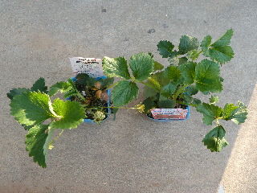
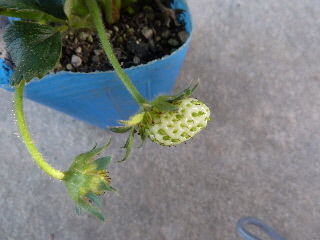
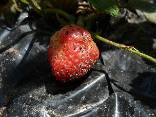
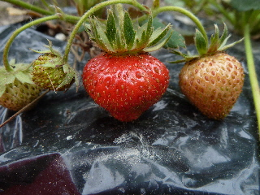
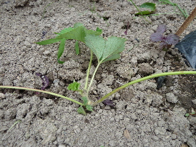
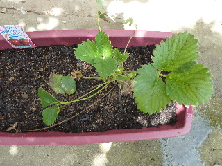
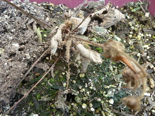

遊びで植物を育てよう
四季成りイチゴ「サマールビー」を育てました。
更新日 : 2013/08/10
四季成りの苺ってあるんですね。
更新日 : 2013/05/03
ホームセンターで四季成りの苺苗を見つけました。

サマールビーって名前です。
これから一年中苺が食べれるなんて、めちゃくちゃいい話じゃないですか。
本当にそんなこと出来るんでしょうか？
でもこんだけ凄い品種改良のものを食べても大丈夫なの？って気にもなります。

もう実が付いてます。
種が大きいのかな？なんか目立っていますね。
美味しいといいな。
TOP > 果物 > イチゴ
苺を食べました。
更新日 : 2013/05/12
先日植えた苺（サマールビー）ですが、買った時から付いていた実が赤く熟れてきたので食べてみました。

大きな種が気になるかな？と思ったんですが、あまり気になりませんでした。
食べた感想は、そんなに甘くないなって思いました。
あと、酸味が強いかな。
まだ植えたばっかりでコンディションはよくないと思うので、本来の味じゃないかもしれません。
次に期待します。
TOP > 果物 > イチゴ
サマールビーはまだまだ収穫できます。
更新日 : 2013/06/09
普通の苺はもう終わっちゃったけど、サマールビーはまだ実がなっています。

ホントに四季なりなんですね。
まだまだ出来そうです。でも2株しか植えてないので多くは食べれない。
TOP > 果物 > イチゴ
苺のランナーが出ました。
更新日 : 2013/06/30
まだ花があるんですが、サマールビーのランナーが出ました。

これをドンドン増やして、沢山収穫したいです。
一気に10株くらい増えないかなー。
大事にしなくちゃ。
TOP > 果物 > イチゴ
苺が1本枯れちゃったので残った1本をプランターに避難しました。
更新日 : 2013/07/14
夏の暑さのせいか、サマールビーが1本枯れちゃいました。
普通の苺は元気なのになー。
生き残ってるサマールビーも花はあるけど、実が出来てなくて元気がなさそうです。
なので日当たりの強い地植えを止めて、プランターに植え替えました。

元気になって実が出来るといいんですが、どうでしょう？
TOP > 果物 > イチゴ
サマールビー全滅です。
更新日 : 2013/08/10
あらら、枯れちゃった。

植え替えしてもダメでした。
まあいいや。あんまり美味しくなかったし、見た目もいまいちだったし、種も大きかったしね。
サマールビーはもうあきらめます。
他に美味しい四季成り苺ってないかなー。
TOP > 果物 > イチゴ
苺は美味しい。沢山食べたい。
【おいしいものを食べよう。】【たくさん寝よう。】
【ソロ活をしよう!】【季節感のあることをしよう。】【動画視聴はほどほどに。】【当サイトの全てのコンテンツは無断転載禁止です。】